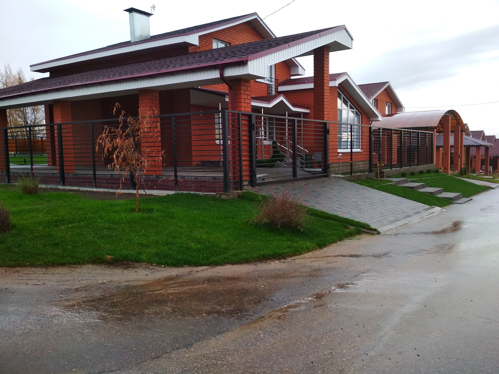
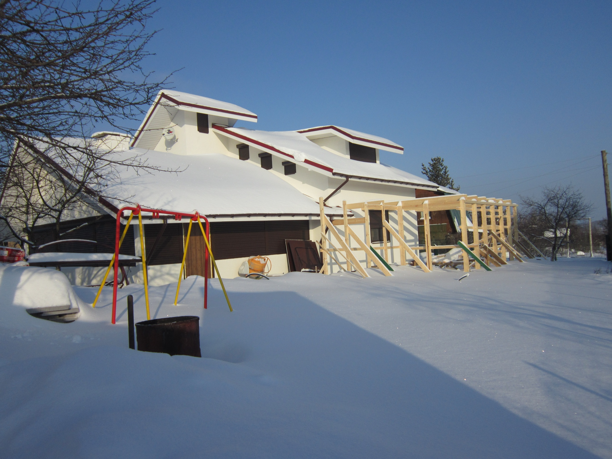
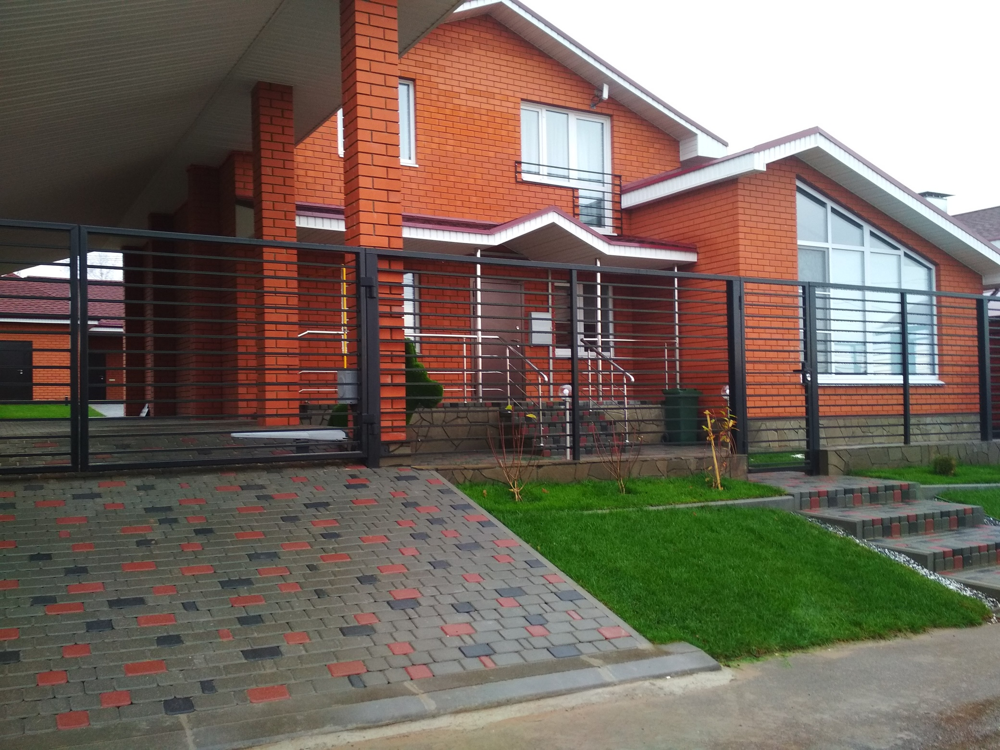

Строительная компания:
ООО «Аквастрой-НН»
Дома

Подготовительный этап строительства
На этом этапе придется решить несколько важных вопросов: выбрать место для строительства, определить его бюджет, выбрать проект дома, получить разрешение на строительство и выбрать подрядчика. Все вопросы равноценны по значимости, каждому придется уделить достаточно внимания.
Покупка участка
При выборе и покупке земли под новый дом обращают внимание как на юридические, так и на практические нюансы. Процедура сопровождается оформлением множества документов, поэтому целесообразно привлечь проверенного посредника – риелтора или юриста. Определиться
с тем, как правильно построить дом, невозможно без детального осмотра участка, на котором будут проводиться работы, а в идеальном варианте все начинаются с поиска земли для строительства. Так как комфорт будущей жизни напрямую
зависит от местоположения участка, то при выборе последнего руководствуются несколькими критериями:

- Особенности участка.Во внимание принимается не только площадь, но и рельеф. Участок на склоне потребует дополнительных финансовых вложений для планировочных и земляных работ, сооружения подпорных стенок.
- Документы владельца (продавца). Необходимо удостовериться в их подлинности и в правильности заполнения (в приведенных размерах).
- Расположение. Учитывается близость к цивилизации, качество подъездных дорог, наличие остановок общественного транспорта, экологическая ситуация (расположенные поблизости вредные производства). Важно разузнать, не расположено ли неподалеку болото, очистные сооружения или мусорная свалка.
- Инфраструктура. Оценивается наличие инженерных коммуникаций (подробную информацию лучше получить в управляющей компании)
- Дополнительные возможные траты. Возможно, на участке имеются обветшалые капитальные постройки, подлежащие сносу, или высоко проходят грунтовые воды, а значит, придется обустраивать эффективную дренажную систему.
- Выполняются геологические и геодезические изыскания, топографическая съемка местности. Результатом станет информация о составе почвы и глубине залегания грунтовых вод, которая поможет адаптировать фундамент типового проекта под конкретные условия. Если на земле есть начатое строительство, придется привязываться к существующему фундаменту и, возможно, его усиливать.
- После покупки участок огораживается.
- Чтобы не загрязнить большую часть земли строительными отходами, необходимо определить место для складирования мусора, замешивания бетона, сжигания отходов, а также доступ строительной техники.
Из чего строить дом
Выбор подходящего материала — тема для отдельного обстоятельного разговора. Любой материал, будь то кирпич, дерево, сэндвич-панели, пено- или газобетон, обладает набором индивидуальных свойств. Эти качества могут проявиться как с положительной, так и
с отрицательной стороны, что зависит от контекста использования.
При выборе материала решающими факторами являются местные условия (климат, рельеф) и экономические аргументы. Последние часто конфликтуют с желанием сделать дом комфортным, надежным и экологически безопасным. Необходимо помнить,
что любой дом нуждается в продуманном утеплении, надежной крыше и современном инженерном обеспечении.
В целом дешевле и быстрее возводятся блочные (из ячеистого бетона) и каркасные дома (включая СИП-панели). Меньше всего времени (1-2 дня) уйдет на установку модульного дома, но это не самый бюджетный вариант.
Расходы на строительство
Такое понятное желание сэкономить не оправдывает себя при возведении дома, так как чаще всего ведет к увеличению расходов в будущем. Поэтапное строительство дома предполагает подробный предварительный расчет сметы; ее лучше составлять вместе с прорабом. После возведения стен и крыши расходы на инженерное обеспечение здания могут показаться неоправданно большими, но сокращать их без веских причин не рекомендуется. 
Подготовка проекта и его привязка к местности
По многим параметрам типовой проект является самым выгодным вариантом (если сравнивать с самостроем и индивидуальным проектом). Он позволяет сразу приступить к строительству, не задерживаясь на проектировочных работах.
Оптимальной будет покупка у фирмы или строительной компании с солидными рекомендациями и гарантиями. Скачанная в интернете версия в итоге может обойтись дороже. Выбирая проект, владельцы отталкиваются от условий и способа
своей жизни, определяя важные параметры будущего дома:
- Нужен ли второй этаж. Расходы на фундаментные и кровельные работы для двухэтажного дома меньше, к тому же можно увеличить площадь для цветника или беседки.
- Форма крыши.
- Количество комнат и их площадь (зависит от того, сколько постоянных жильцов и как часто планируется прием гостей).
- Возможно предусматривается строительство дома с баней
- Высота помещений (для жилых этажей – от 3 м).
- Размер гостиной, кухни, подсобных помещений.
- Количество санузлов.
- Дополнительные помещения: сауна, гардеробные комнаты, гараж.
- Внутренняя отделка (готовится дизайнерский проект).
- Дополнительные удобства (умывальник в гараже).
Необходимость ландшафтного дизайна
Цель ландшафтной планировки — превращение участка в территорию, максимально соответствующую запросам семьи. Обустройство, выполненное специалистами, позволит решить несколько задач:
- Выбрать место для дома, хозяйственных помещений, зоны отдыха, сада и огорода. При этом учитывается освещенность, состав почвы, форма участка и пролегание грунтовых вод.
- Определить место для прокладки инженерных коммуникаций; при необходимости проектируется место для септика.
- Обыграть сложный рельеф и, возможно, изменить его.
- Предусмотреть дренаж почвы.
- Выбрать стиль оформления участка и создать неповторимый дизайн.
- Подобрать полезные и декоративные растения, подходящие для выращивания в данных условиях.
Возведение дома
Зная, с чего начать строить дом на участке, можно продумать последующие этапы строительства частного дома и не волноваться о сорванных сроках. Перед началом работ необходимо обеспечить подъездные пути, подачу воды и электроэнергии на стройплощадку. На этом этапе оси здания уже вынесены на участок в соответствии с пожарными и санитарными нормами. Возведение частного дома проходит несколько этапов.
Земляные работы, фундамент
Намечается место входа водопровода и вывода канализации, роются для них траншеи, прокладываются и утепляются трубы. Закладывается фундамент. Для этого роется котлован, на дно укладывается подушка из щебня, устанавливается опалубка. После монтажа арматуры
заливается бетон.
Чтобы бетон набрал прочность, потребуется от 20 до 30 дней. Это время можно посвятить устройству септика или колодца. Затем возводят стены фундамента.

Возведение каркаса дома
На этом этапе строят стены и монтируют перекрытия, затем сооружают стропила и укладывают кровлю. В последнюю очередь вставляют окна и устанавливают гаражные ворота и входную дверь.
Отделка фасада и первичные внутренние работы
Сюда включают наружную отделку стен, установку балкона и лестницы (если предусмотрены проектом). Далее проводят внутреннее утепление пола и стен, первичную отделку стен, монтируют полы, обшивают потолок. Одновременно прокладывают инженерные сети (канализацию,
водопровод и электропроводку).
После этого здание можно застраховать как объект незавершенного строительства. До финишной отделки стен монтируют систему кондиционирования и теплые полы.
Заключение – окончательное обустройство
Этап включает завершение внутренней отделки, установку кухни и сантехоборудования, приведение в порядок территории. После завершения работ владелец с подрядчиком подписывают акт сдачи-приемки работ с указанием гарантии на выполненные работы. Далее постройку
необходимо зарегистрировать в ГАСН (Государственный архитектурно-строительный надзор) и в Госрегистре.
Возведение собственного дома — волнительный период в жизни семьи. Путь от утверждения архитектурного плана до новоселья будет вспоминаться долгие годы. Это обязательно будут приятные воспоминания, если грамотно выбрать строительную
компанию, специалисты которой помогут с правильным выбором участка и проекта, плюс, составят продуманный план строительства.

Наверх